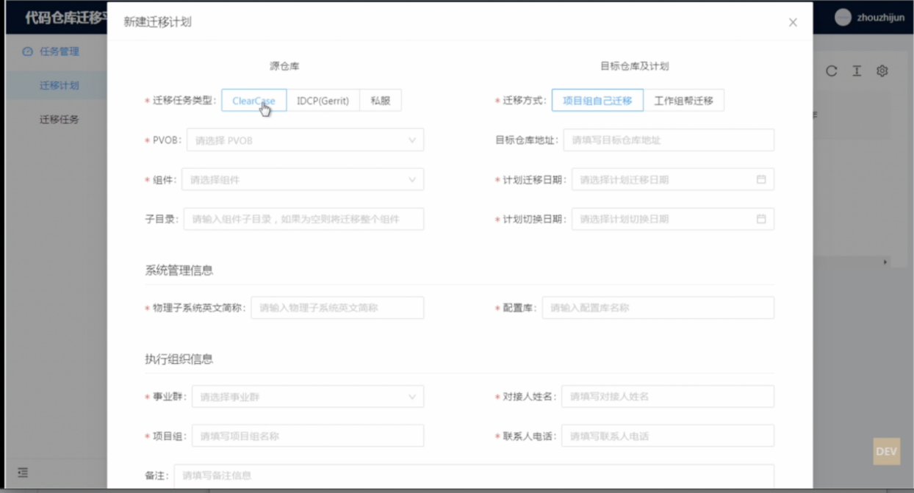

点击“迁移计划”页面右上角的“新建迁移计划”按钮，即可新建迁移计划。如下图：

新建计划时，三种类型CC、icdp、私源仓库信息都需逐一进行登记。不同类型的源仓库信息填写的内容不同。信息差异的不同主要用于执行迁移任务时需要的参数不同而定。
创建迁移计划时，目标仓库地址如果还没有新建，可以空着暂不填写。
注意点：
1）子目录选项:一般情况下，不填写即可将整个组件迁移到目标仓库中。如果有多个个子目录，只想迁移其中的1个，那么直接填写子目录名称即可；如果想迁移其中的某几个，本平台暂不支持。但是可以不填写，默认会迁移所有的子目录到目标仓库，然后再目标仓库中删除不要的子目录即可。
2)
目前有事业群反映，物理子系统过多，逐个填报过于繁琐,如果想批量录入，工作组提供了临时的批量导入方案：
现提供仓库迁移范围模板，事业群同事可以编辑迁移范围模板excel，由工作组每日进行导入
模板存放地址：云上，\\128.194.1.13\全生命周期it管理\工作目录\仓库迁移信息\仓库迁移范围信息-模板.xlsx
事业群可以复制模板，修改名称为【仓库迁移范围信息-事业群.xlsx】进行填写
填写前请先阅读同级文件【readme.txt】
无法访问共享的，请使用sftp填报
地址：128.194.225.15 用户名密码：repinf/inf0525
存放位置：/home/ap/repinf